HC1 · EVERY COMPARE VIEW ON ONE SCREEN, WITH REPLAY — AND THE BUGS ALAN HIT
6–7 Oct 2026 · on a branch, nothing deployed, no table changed · Hub branch hub/hc1-compare-one-screen-20261006 · allocation branch hc1-target-mix-legend-20261006
1 · THE COMPARE, BEFORE → AFTER (1680 × 1050)
Before: one view at a time, behind two rows of tabs (SPDR · iSHARES · VANGUARD · EQUAL-WT · INDEXES · BOW TIE · OUR NAMES). After: every view is a card on one row, compact, left to right. Nothing was recomputed — each card draws the same numbers its tab drew.
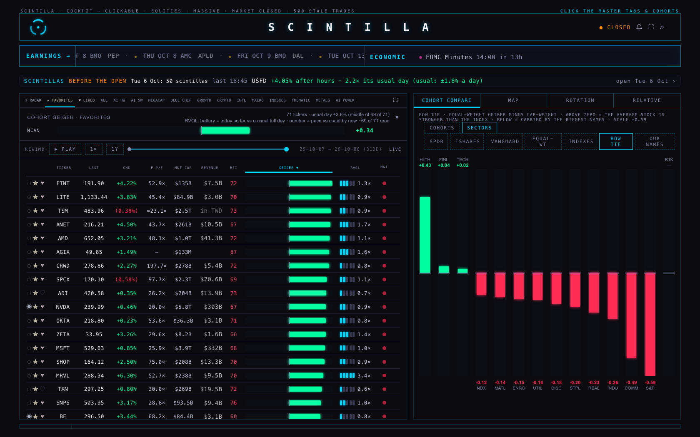
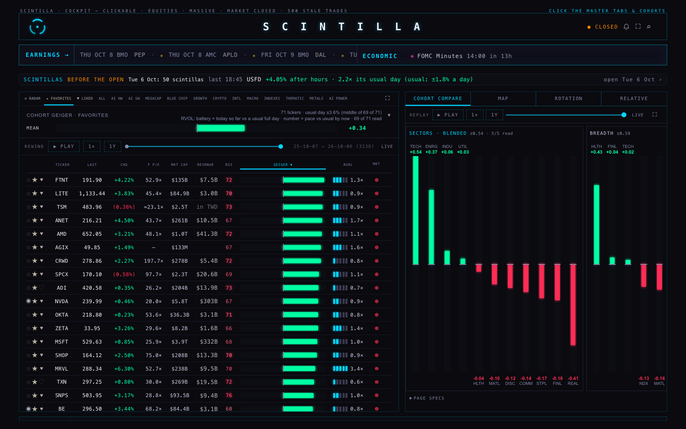
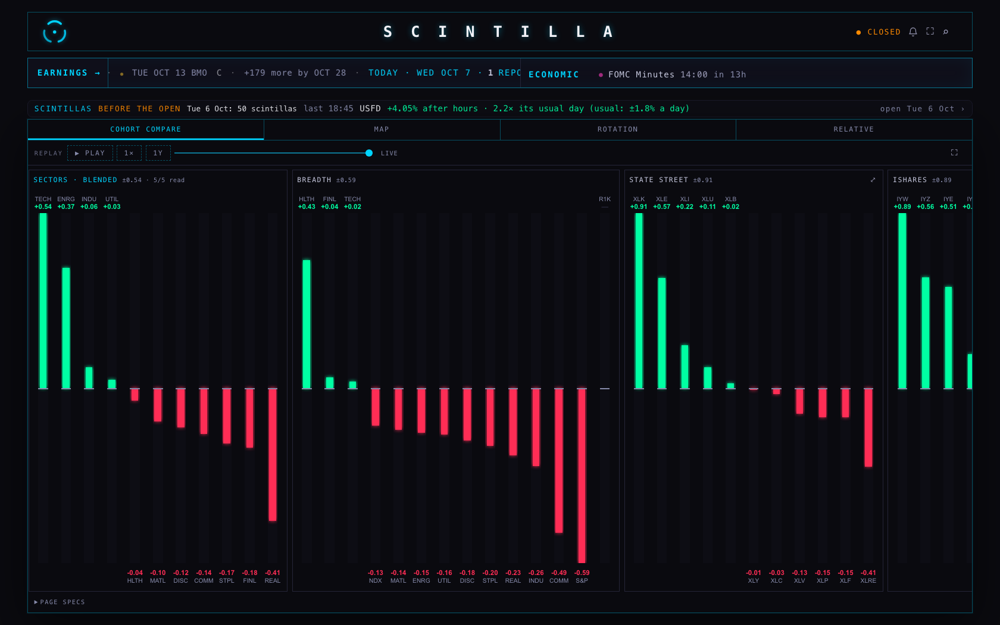
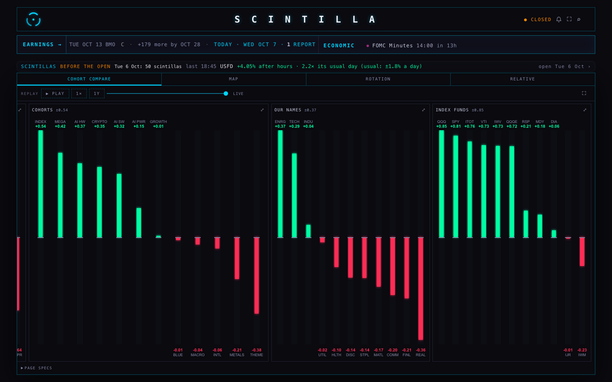
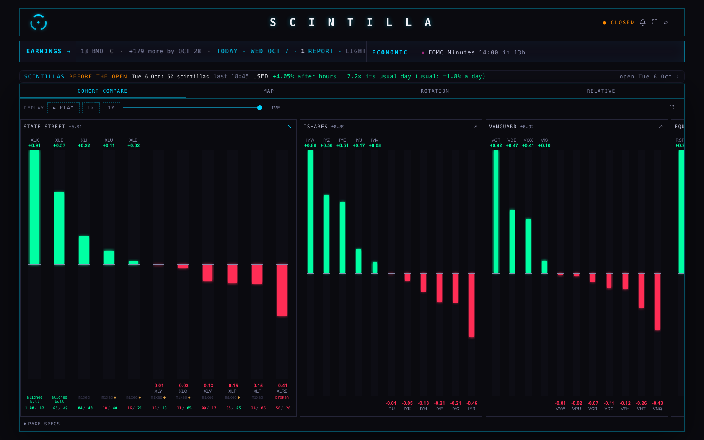
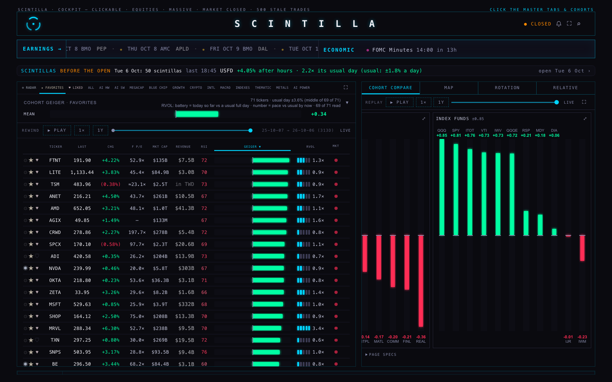
WHAT EACH CARD SHOWED WHEN THE PICTURE WAS TAKEN
| view | scale (and what it says about itself) | its first bars, strongest first | bars |
|---|---|---|---|
| SECTORS · BLENDED | ±0.54 · 5/5 read | TECH +0.54 · ENRG +0.37 · INDU +0.06 · UTIL +0.03 · HLTH -0.04 … | 11 |
| BREADTH | ±0.59 | HLTH +0.43 · FINL +0.04 · TECH +0.02 · NDX -0.13 · MATL -0.14 … | 14 |
| STATE STREET | ±0.91 | XLK +0.91 · XLE +0.57 · XLI +0.22 · XLU +0.11 · XLB +0.02 … | 11 |
| iSHARES | ±0.89 | IYW +0.89 · IYZ +0.56 · IYE +0.51 · IYJ +0.17 · IYM +0.08 … | 11 |
| VANGUARD | ±0.92 | VGT +0.92 · VDE +0.47 · VOX +0.41 · VIS +0.10 · VAW -0.01 … | 11 |
| EQUAL-WEIGHT | ±0.93 | RSPT +0.93 · RSPG +0.42 · RSPH +0.30 · RSPN -0.04 · RSPU -0.05 … | 11 |
| COHORTS | ±0.54 | INDEX +0.54 · MEGA +0.42 · AI HW +0.37 · CRYPTO +0.35 · AI SW +0.32 … | 12 |
| OUR NAMES | ±0.37 | ENRG +0.37 · TECH +0.29 · INDU +0.04 · UTIL -0.02 · HLTH -0.10 … | 11 |
| INDEX FUNDS | ±0.85 | QQQ +0.85 · SPY +0.81 · ITOT +0.76 · VTI +0.73 · IWV +0.73 … | 11 |
The hover of the first BREADTH bar, word for word: “HEALTH · RSPH (equal-weight) +0.30 − XLV (cap-weight) −0.13 = +0.43 Geiger points (a gap between two scores, not a % return) · the average stock is stronger than the index · scale ±0.59”
A click on a cohort's bar still switches the board, as it did on the old strip: METALS was clicked in the COHORTS card, the board became METALS (19 names), the bar was outlined, and the row of cards came back where it had been scrolled (2174 before the click, 2174 after) — picture shots/cmp-3b-after-a-cohort-click-after-1680.png.
2 · THE CONSOLIDATED SECTOR READING (THE FIRST CARD)
One reading per sector: the average of five readings, each counting a fifth. It is the allocation tool's method with its default weights. To check that it is the same reading and not a look-alike, the Hub branch and the live allocation tool were opened side by side and each was asked for its own numbers.
| sector | Hub, this branch | allocation tool, live | difference as loaded | with the tool's sector list | State Street fund | fund + equal-weight twin | our names in the sector | the tree's close tier | sector ranking | read |
|---|---|---|---|---|---|---|---|---|---|---|
| TECH | +0.5376 | +0.5443 | −0.0067 | +0.0000 | +0.91 | +0.92 | +0.30 | +0.28 | +0.28 | 5/5 |
| ENERGY | +0.3686 | +0.3686 | +0.0000 | +0.0000 | +0.57 | +0.50 | +0.23 | +0.19 | +0.36 | 5/5 |
| INDUSTRIAL | +0.0647 | +0.0614 | +0.0033 | −0.0001 | +0.22 | +0.09 | −0.00 | −0.02 | +0.04 | 5/5 |
| UTILITIES | +0.0263 | +0.0263 | +0.0000 | +0.0000 | +0.11 | +0.03 | +0.01 | +0.01 | −0.02 | 5/5 |
| HEALTH | −0.0381 | −0.0381 | +0.0000 | +0.0000 | −0.13 | +0.08 | −0.04 | +0.00 | −0.10 | 5/5 |
| MATERIALS | −0.1014 | −0.1014 | +0.0000 | +0.0000 | +0.02 | −0.05 | −0.14 | −0.17 | −0.18 | 5/5 |
| DISCRETIONARY | −0.1199 | −0.1199 | +0.0000 | +0.0000 | −0.01 | −0.10 | −0.19 | −0.16 | −0.15 | 5/5 |
| COMMS | −0.1400 | −0.1400 | +0.0000 | +0.0000 | −0.03 | −0.27 | −0.15 | −0.10 | −0.15 | 5/5 |
| STAPLES | −0.1703 | −0.1703 | +0.0000 | +0.0000 | −0.15 | −0.25 | −0.12 | −0.19 | −0.14 | 5/5 |
| FINANCIALS | −0.1820 | −0.1822 | +0.0002 | +0.0000 | −0.15 | −0.13 | −0.21 | −0.20 | −0.21 | 5/5 |
| REAL ESTATE | −0.4063 | −0.4063 | +0.0000 | +0.0000 | −0.41 | −0.52 | −0.33 | −0.42 | −0.35 | 5/5 |
What the two columns of differences say. The arithmetic is the same: given the tool's own list of which name sits in which sector, the Hub's numbers are the tool's to 0.0001. As each page loaded they were up to 0.0067 apart, and only where a sector's names are counted (our names in the sector; the tree's close tier) — never in the fund readings or the ranking. The cause is in the tool, not the blend: it fills its list from two reads that race (the industry table and the State Street funds' holdings), and whichever lands first names a name's sector. On this load 13 of 806 names sat in a different sector in the two lists: ADP (TECH here, INDUSTRIAL there), AMCR (DISCRET here, MATERIALS there), APP (TECH here, COMMS there), DASH (COMMS here, DISCRET there), FIS (TECH here, FINANCIALS there), FSLR (ENERGY here, TECH there), JCI (MATERIALS here, INDUSTRIAL there), LDOS (TECH here, INDUSTRIAL there), PKG (DISCRET here, MATERIALS there), SW (DISCRET here, MATERIALS there), TTWO (TECH here, COMMS there), UBER (TECH here, INDUSTRIAL there), XYZ (TECH here, FINANCIALS there). The Hub always takes the industry table first, then the holdings — the order the tool's code is written in. The 3 runs on file: 0.0067 as loaded, 0.0001 with one list; 0.0067 as loaded, 0.0001 with one list; 0.0067 as loaded, 0.0001 with one list. Two earlier runs tonight (00:17 and 00:34 ET, not kept on file) agreed to 0.0001 as loaded: the tool's reads had landed in the other order.
The tool's weights at that moment: {"SPDR": 20, "HUBCMP": 20, "MKTBOW": 20, "TREE": 20, "RANK": 20}. The hover of the first bar, word for word: “TECH · blended +0.54 from 5 of 5 readings, each counting the same · State Street fund +0.91 (XLK) · fund and its equal-weight twin +0.92 (XLK + RSPT) · our names in the sector +0.30 (114 names) · the tree's close tier +0.28 (133 names, 2026-10-06) · sector ranking +0.28 (#3 on 2026-10-06) · index names +0.79, average stock +0.45: breadth −0.35 · scale ±0.54”
3 · REPLAY
The REPLAY row is a second handle on the board's REWIND bar, not a second clock: PLAY, the speed, the reach (1Y) and the scrubber each press the bar's own control, and the board moves with it. It is on this screen because the bar lives on the board, which the full-screen compare covers and which sits far above it on a phone.
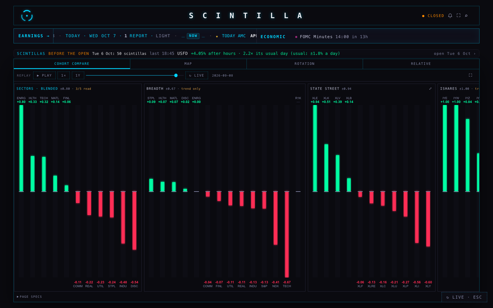
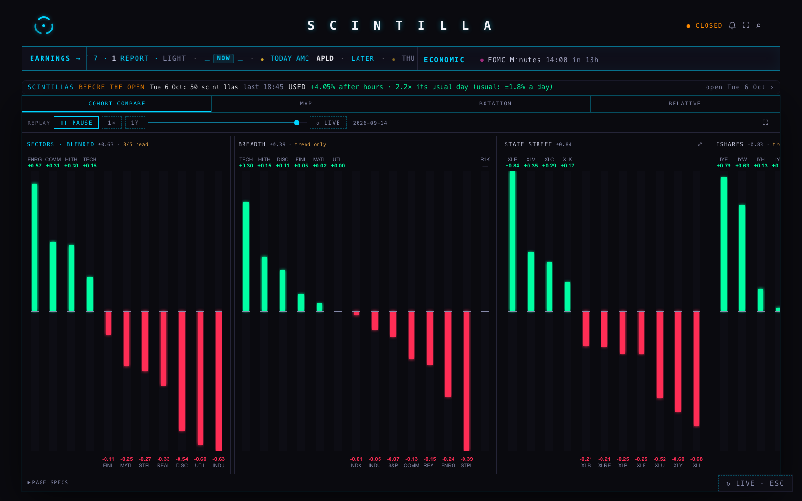
WHAT A REPLAYED DAY CAN SHOW — THE STORED DAYS DECIDE, AND THE CARDS SAY IT
| view | scale (and what it says about itself) | its first bars, strongest first | bars |
|---|---|---|---|
| SECTORS · BLENDED | ±0.80 · 3/5 read | ENRG +0.80 · HLTH +0.33 · TECH +0.32 · MATL +0.14 · FINL +0.06 … | 11 |
| BREADTH | ±0.67 · trend only | STPL +0.09 · HLTH +0.07 · MATL +0.07 · DISC +0.02 · ENRG +0.00 … | 14 |
| STATE STREET | ±0.94 | XLE +0.94 · XLK +0.51 · XLV +0.39 · XLB +0.14 · XLF -0.06 … | 11 |
| iSHARES | ±1.00 · trend only | IYE +1.00 · IYW +1.00 · IYZ +0.84 · IYF +0.44 · IYM +0.35 … | 11 |
| VANGUARD | ±1.00 · trend only | VDE +1.00 · VGT +1.00 · VOX +0.39 · VFH +0.22 · VHT +0.22 … | 11 |
| EQUAL-WEIGHT | ±1.00 · trend only | RSPG +1.00 · RSPT +0.33 · RSPH +0.29 · RSPF +0.22 · RSPM +0.13 … | 11 |
| COHORTS | ±0.70 | METALS +0.70 · CRYPTO +0.57 · GROWTH +0.21 · INDEX +0.21 · AI HW +0.14 … | 12 |
| OUR NAMES | ±0.71 | ENRG +0.71 · HLTH +0.23 · MATL +0.13 · FINL +0.08 · TECH +0.07 … | 11 |
| INDEX FUNDS | ±0.49 · trend only | QQQ +0.49 · IWV +0.45 · ITOT +0.45 · SPY +0.28 · VTI +0.20 … | 11 |
- SECTORS · BLENDED reads fewer than five on a past day. The tree's close tier has no stored past. The ranking table's rows before 5 Oct were built from a staged table that carried 24 Aug readings under each day's date, so they are never drawn as that day's reading. The hover names what was not read: “ENERGY on 2026-09-08 · blended +0.80 from 3 of 5 readings, each counting the same · State Street fund +0.94 (XLE) · fund and its equal-weight twin +0.97 (XLE + RSPG, the twin on trend alone) · our names in the sector +0.49 (24 names) · not read: the tree's close tier (no stored past), sector ranking (no row that reads this day) — the others carry the share · scale ±0.80”
- iSHARES, VANGUARD, EQUAL-WEIGHT: their stored history is trend from 18 Aug 2026 and no momentum at all (read from the tables on 6 Oct). A replayed bar is therefore the fund's trend alone, and the card says “trend only”.
- BREADTH on a replayed day was a trend minus a full Geiger — two different things subtracted. It is now trend against trend whenever one fund of the pair has no stored momentum, so the gap is like for like, and the card says “trend only”. Live is untouched: both funds' Geiger, as always.
- The cards step once per replayed day (0.7 s at 1×). They do not glide between days as the board's rows do.
4 · ON A PHONE (390 wide)
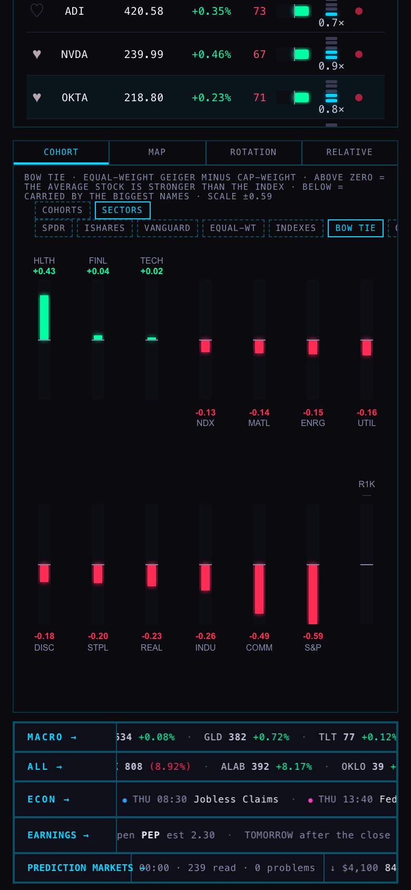
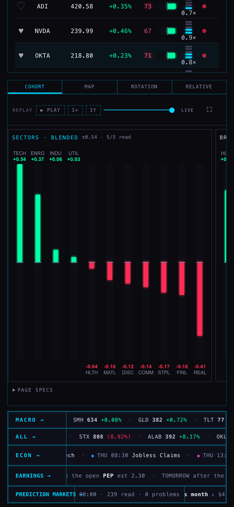
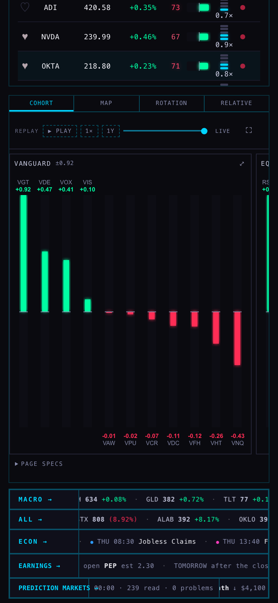
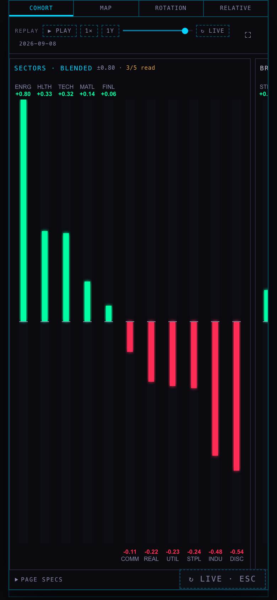
5 · BUG: “I CAN'T ADD FAVORITES”
Cause. The table that holds FAVORITES and RADAR allowed 64 names to a list. FAVORITES reached 64 at 16:51 ET on 6 Oct. From then on every add was refused by the database, and the page put the star back to empty without a word. It was not EQIX and not the iMac: any name, any browser. LIKED kept working because it lives in another table.
Fix. The coordinator raised the limit to 256 the same evening and added the seven names Alan had tried (71 names, read back at 23:45 ET). This branch changes no table. It fixes the silence: a refused add now puts the screen straight back to what is stored and prints one line at the foot of the screen, with a way to dismiss it.
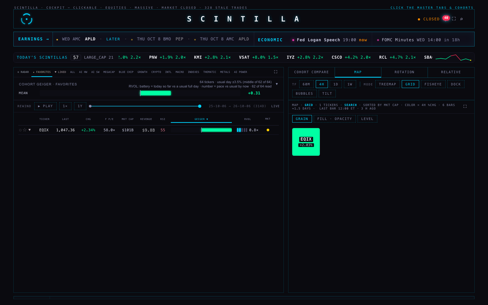
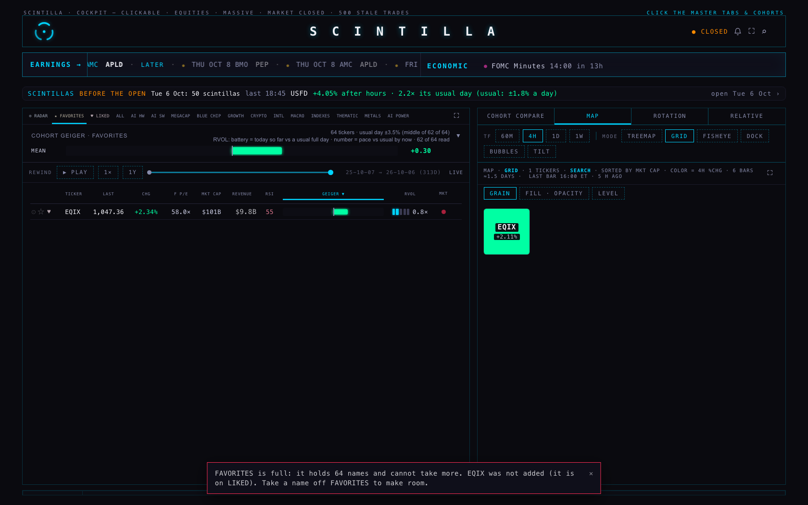
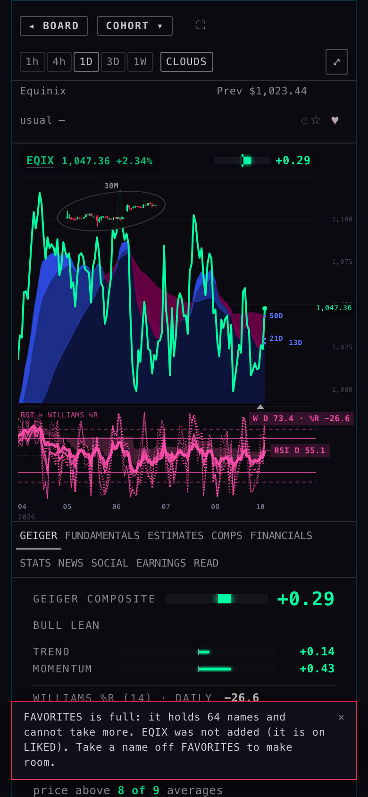
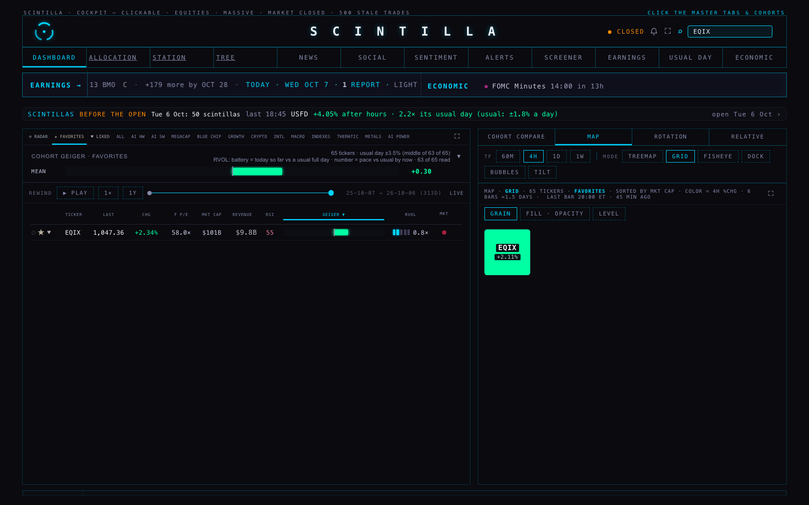
EVERY NAME, BOTH WAYS IN — WHAT THE PAGE DID
| name | from | at the tap | 3.5 s later | the list table | what the page said |
|---|---|---|---|---|---|
| BEFORE — the live page, limit 64 | |||||
| CRWD | search | lit | empty again | not stored | — nothing — |
| NET | search | lit | empty again | not stored | — nothing — |
| OKTA | search | lit | empty again | not stored | — nothing — |
| EQIX | search | lit | empty again | not stored | — nothing — |
| CRWD | board star (♥ LIKED tab) | lit | empty again | not stored | — nothing — |
| NET | board star (♥ LIKED tab) | lit | empty again | not stored | — nothing — |
| OKTA | board star (♥ LIKED tab) | lit | empty again | not stored | — nothing — |
| EQIX | board star (♥ LIKED tab) | lit | empty again | not stored | — nothing — |
| AFTER — this branch, limit 64 | |||||
| CRWD | search | lit | empty again | not stored | FAVORITES is full: it holds 64 names and cannot take more. CRWD was not added (it is on LIKED). Take a name off FAVORITES to make room. |
| NET | search | lit | empty again | not stored | FAVORITES is full: it holds 64 names and cannot take more. NET was not added (it is on LIKED). Take a name off FAVORITES to make room. |
| OKTA | search | lit | empty again | not stored | FAVORITES is full: it holds 64 names and cannot take more. OKTA was not added (it is on LIKED). Take a name off FAVORITES to make room. |
| EQIX | search | lit | empty again | not stored | FAVORITES is full: it holds 64 names and cannot take more. EQIX was not added (it is on LIKED). Take a name off FAVORITES to make room. |
| CRWD | board star (♥ LIKED tab) | lit | empty again | not stored | FAVORITES is full: it holds 64 names and cannot take more. CRWD was not added (it is on LIKED). Take a name off FAVORITES to make room. |
| NET | board star (♥ LIKED tab) | lit | empty again | not stored | FAVORITES is full: it holds 64 names and cannot take more. NET was not added (it is on LIKED). Take a name off FAVORITES to make room. |
| OKTA | board star (♥ LIKED tab) | lit | empty again | not stored | FAVORITES is full: it holds 64 names and cannot take more. OKTA was not added (it is on LIKED). Take a name off FAVORITES to make room. |
| EQIX | board star (♥ LIKED tab) | lit | empty again | not stored | FAVORITES is full: it holds 64 names and cannot take more. EQIX was not added (it is on LIKED). Take a name off FAVORITES to make room. |
| AFTER — this branch, limit 256 (as it is now) | |||||
| CRWD | search | lit | still lit | stored | — nothing — |
| NET | search | lit | still lit | stored | — nothing — |
| OKTA | search | lit | still lit | stored | — nothing — |
| EQIX | search | lit | still lit | stored | — nothing — |
| CRWD | board star (♥ LIKED tab) | lit | still lit | stored | — nothing — |
| NET | board star (♥ LIKED tab) | lit | still lit | stored | — nothing — |
| OKTA | board star (♥ LIKED tab) | lit | still lit | stored | — nothing — |
| EQIX | board star (♥ LIKED tab) | lit | still lit | stored | — nothing — |
After a reload with the limit at 256 the list held 68 names, ending DLR, CRWD, NET, OKTA, EQIX. The list table in these walks is a copy held inside the test; no request other than a read left the browser.
6 · BUG: THE GEIGER BAR IN SEARCH LOOKED OFF-SCALE
Cause. The board drew each bar against the strongest reading among the rows on screen. A search that found one name therefore always filled its bar, whatever its Geiger; the same name was shorter in a list that also held a +0.96.
Fix. Every row is drawn on the Geiger's own fixed scale, −1 to +1 — the scale the cohort line above the board, the Geiger breakdown and the company view's list already used. The replay redraws the same bars and uses the same scale.
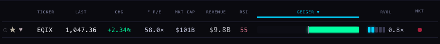
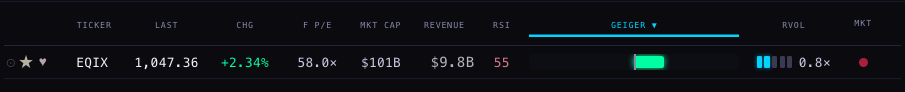
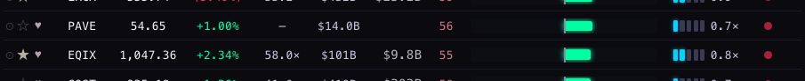
What changes for the eye: on a list whose strongest name is below +1, every bar is a little shorter than before (in LIKED the strongest was +0.96, so about 4% shorter). On a short or weak list the bars are honestly short instead of stretched.
7 · BUG: THE COMPANY VIEW'S CHART — CROPPED RIGHT SIDE, NO HOVER % — NOT REPRODUCED
Alan: the Geiger panel crops the right side of the embedded chart (oscillators cut off), and the embedded chart lacks the Station's hover % change. I could not make either happen, so nothing was changed for this bug. What I measured:
- The chart in the company view is the Station's own chart page, loaded in a frame (https://station.scintillahub.ai/chart/), not a copy. It is served “never cache”, so a browser cannot be holding an old one.
- Hover. With the pointer on the price the pane drew “1,073.31 / +2.48%” at its right edge (units 435–499 of 500), and in the expanded view “1,069.27 / +2.09%” (476–540 of 541). That is the Station's hover label since S16 (6 Oct): the price on the pointer's line with the percent under it.
- The live Hub gives the same (the page as deployed, not this branch): at 1680 the label read “1,073.31 / +2.48%” inside the pane, nothing over the frame; expanded and on a 390 phone likewise.
- Crop. At 30 window sizes from 1000 to 2560 wide, collapsed and expanded, the frame was never wider than its panel, nothing lay over its right edge, and the Station's canvas was never wider than its pane (cut found at none). On a 390 phone the chart was whole too.
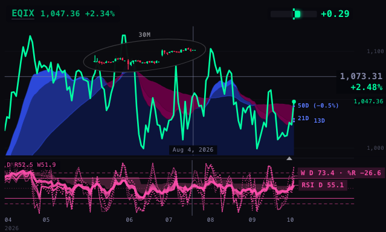
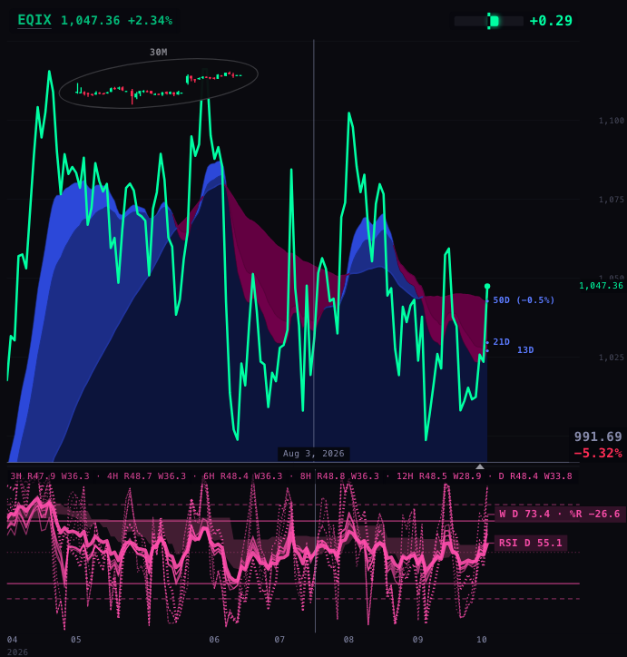
What I could not check: this was one browser engine (headless Chromium). If Alan saw it in Safari, or at a window size outside the fifteen above, it would not show here. And the Station's hover on the chart under the pointer shows the pointer's level against the current price; the “price on that date and % since” box appears only on the other charts of the Station's wall. A single chart never shows it. If that is the percent Alan misses, it is a Station change, and it would bring back the second label he asked to remove on 6 Oct.
the fifteen sizes, twice
| window | view | page zoom | frame, left–right | its panel | frame size | Station canvas of pane | verdict |
|---|---|---|---|---|---|---|---|
| 1000 | collapsed | 1 | 594–977 | 593–978 | 383×300 | 383 of 383 | whole |
| 1100 | collapsed | 1 | 653–1077 | 652–1078 | 424×300 | 424 of 424 | whole |
| 1200 | collapsed | 1 | 712–1177 | 711–1178 | 465×300 | 465 of 465 | whole |
| 1280 | collapsed | 1 | 759–1257 | 758–1258 | 498×300 | 498 of 498 | whole |
| 1366 | collapsed | 1 | 803–1302 | 802–1303 | 499×300 | 499 of 499 | whole |
| 1440 | collapsed | 1.12 | 854–1413 | 853–1414 | 499×300 | 499 of 499 | whole |
| 1512 | collapsed | 1.12 | 890–1449 | 889–1450 | 499×300 | 499 of 499 | whole |
| 1600 | collapsed | 1.12 | 934–1493 | 933–1494 | 499×300 | 499 of 499 | whole |
| 1680 | collapsed | 1.28 | 993–1633 | 992–1634 | 500×300 | 500 of 500 | whole |
| 1728 | collapsed | 1.28 | 1017–1657 | 1016–1658 | 500×300 | 500 of 500 | whole |
| 1800 | collapsed | 1.28 | 1053–1693 | 1052–1694 | 500×300 | 500 of 500 | whole |
| 1920 | collapsed | 1.45 | 1133–1858 | 1132–1859 | 500×300 | 500 of 500 | whole |
| 2048 | collapsed | 1.45 | 1197–1922 | 1196–1923 | 500×300 | 500 of 500 | whole |
| 2240 | collapsed | 1.45 | 1293–2018 | 1292–2019 | 500×300 | 500 of 500 | whole |
| 2560 | collapsed | 1.45 | 1453–2178 | 1452–2179 | 500×300 | 500 of 500 | whole |
| 1000 | expanded | 1 | 179–577 | 22–978 | 398×668 | 398 of 398 | whole |
| 1100 | expanded | 1 | 179–627 | 22–1078 | 448×668 | 448 of 448 | whole |
| 1200 | expanded | 1 | 179–677 | 22–1178 | 498×668 | 498 of 498 | whole |
| 1280 | expanded | 1 | 179–717 | 22–1258 | 538×692 | 538 of 538 | whole |
| 1366 | expanded | 1 | 220–760 | 63–1303 | 540×692 | 540 of 540 | whole |
| 1440 | expanded | 1.12 | 201–806 | 26–1414 | 540×593 | 540 of 540 | whole |
| 1512 | expanded | 1.12 | 237–842 | 62–1450 | 540×593 | 540 of 540 | whole |
| 1600 | expanded | 1.12 | 281–886 | 106–1494 | 540×593 | 540 of 540 | whole |
| 1680 | expanded | 1.28 | 247–939 | 46–1634 | 540×488 | 541 of 541 | whole |
| 1728 | expanded | 1.28 | 271–963 | 70–1658 | 540×488 | 541 of 541 | whole |
| 1800 | expanded | 1.28 | 307–999 | 106–1694 | 540×488 | 541 of 541 | whole |
| 1920 | expanded | 1.45 | 288–1072 | 61–1859 | 541×400 | 541 of 541 | whole |
| 2048 | expanded | 1.45 | 352–1136 | 125–1923 | 541×641 | 541 of 541 | whole |
| 2240 | expanded | 1.45 | 448–1232 | 221–2019 | 541×641 | 541 of 541 | whole |
| 2560 | expanded | 1.45 | 608–1392 | 381–2179 | 541×641 | 541 of 541 | whole |
8 · THE ALLOCATION TOOL'S LEGEND (its own repo, its own branch)
Cause. The note beside each sector (“none picked”) was placed after the label's width as measured in the note's smaller font, so every label was taken to be a sixth narrower than it is: 3 labels were written over (CONS. DISCRETIONAR by 7.6 px, CONS. STAPLES by 1.6 px, COMMUNICATIONS by 2.8 px). Fix. The label is measured in the font it is drawn in and keeps its last letter; the note sits in the room left before the percent. Overlapping pairs after: 0.
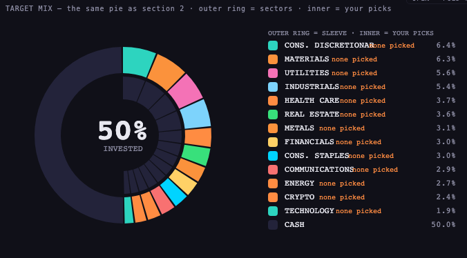
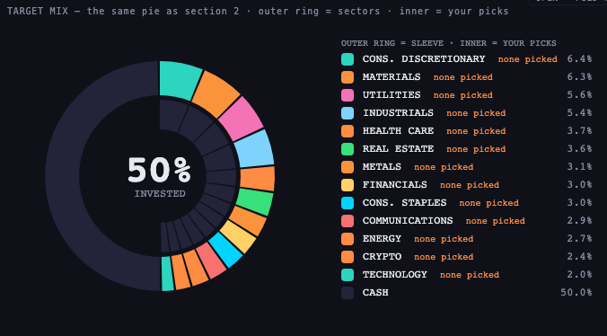
Another lane (AL7) is redesigning this pie tonight and may remove “none picked” altogether; this fix is three lines on its own branch so it can be taken or dropped.
9 · WHAT COULD BE WRONG, AND WHAT WAS NOT DONE
- The blend lives in two places (the allocation tool and now the Hub), each with its own copy of the arithmetic. A test runs the Hub's against the tool's own functions (copied word for word at its live version) on 400 cases; live, with one sector list, they agree to 0.0001. If the tool changes its method, the Hub must be changed with it.
- The allocation tool's sector list is not the same on every load (section 2): 13 names move between two sectors depending on which of its two reads lands first, which moves its own blended reading by up to 0.0067. That is for the tool's lane to fix (read the two in a fixed order); I would take the State Street funds' holdings first, since the bars are named after those funds. Until then the Hub and the tool can differ by that much.
- The first card reads three things the page did not read before: the tree's close tier (149 KB), the ranking table and, once, the profile, industry and fund-holdings files (548 KB, from the Hub itself). Only when COHORT COMPARE is drawn; again only when 15 minutes old; no timer.
- Replay of the fund cards before 18 Aug 2026 is empty for iShares, Vanguard and equal-weight (no stored day), and trend-only after it, until someone stores their momentum history. That is a keyed job on Fly, not this lane's.
- Hovers do not show in headless pictures; the ones quoted above were read from the page.
- Not deployed, not merged. The old single strip's code is still in the page (its tests still run); nothing draws it.
- An unfolded card's zero line sits a little higher than its compact neighbours', because two more rows (the word, the pair) go under its bars. Compact cards are level with each other.
- The room without a board (no REWIND bar, so no REPLAY handle) is covered by a test only; no tab on this page leads to it.
- The chart bug is open (section 7).
10 · DECISIONS FOR ALAN
- Ship the one-screen compare as built? Recommend yes. The order is BLENDED, BREADTH, STATE STREET, iSHARES, VANGUARD, EQUAL-WEIGHT, COHORTS, OUR NAMES, INDEX FUNDS; say if another order reads better.
- Replayed BREADTH read trend against trend (because the equal-weight funds have no stored momentum)? Recommend yes, labelled as it is. The other honest choice is to leave replayed BREADTH empty until that history is stored.
- The chart crop: which browser and which window were you on, or a screenshot? Recommend one screenshot — with it this is a short fix; without it I would be guessing.
PAGE SPECS
Pictures: headless Chromium through Playwright, never a window. 1680 × 1050 and 390 × 844. “Before” is the Hub as deployed (page 6c9d219682c4); “after” is this branch's files served at the same address (page de2402f7449b), with the live chart API and the live database's reads. Every request that was not a read was stopped: 0 stopped across the four runs. Console errors: 0 on the branch.
Files: tools/capture.mjs (sections 1, 3, 4, 6, 7) → data/capture-*.json · tools/blend-crosscheck.mjs → data/blend-crosscheck.json · tools/chart-frame-sweep.mjs → data/chart-frame-sweep.json · tools/favorites-walk.mjs → data/favorites-walk-*.json · tools/build-page.py wrote this page from those files. data/not-applied/ holds the first run's unapplied SQL for the list limit (500), kept for the record: the coordinator's 256 is what is live.
The favorites walk takes a picture at every step of every name (data/favorites-walk-*.json names them all). The folder keeps the start, the reload, every EQIX step and CRWD's settled step for each run; the rest were left out for size.
Tests: tests/hc1-compare-one-screen.test.mjs (15), tests/hc1-board-bar-scale.test.mjs (3), tests/hc1-favorites-cap.test.mjs (14); six older tests brought to the new behaviour. Allocation: tests/hc1-legend.test.mjs (3).